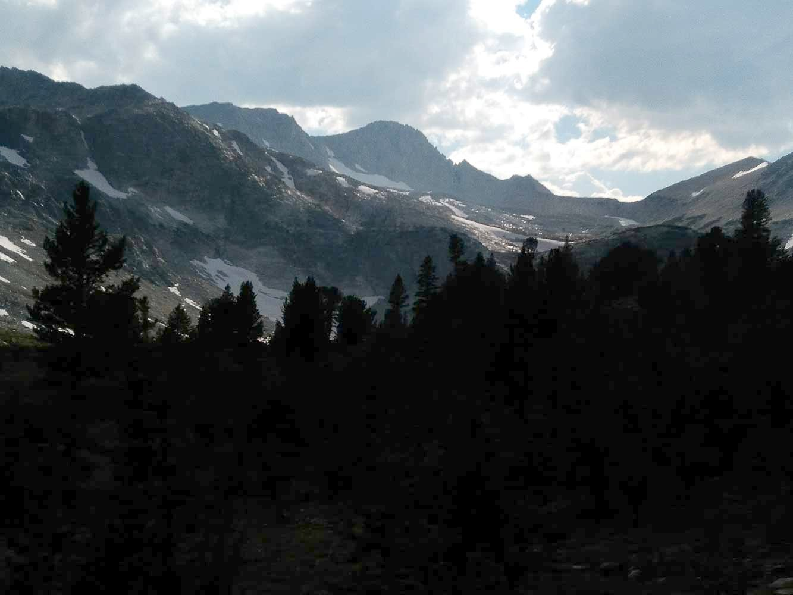
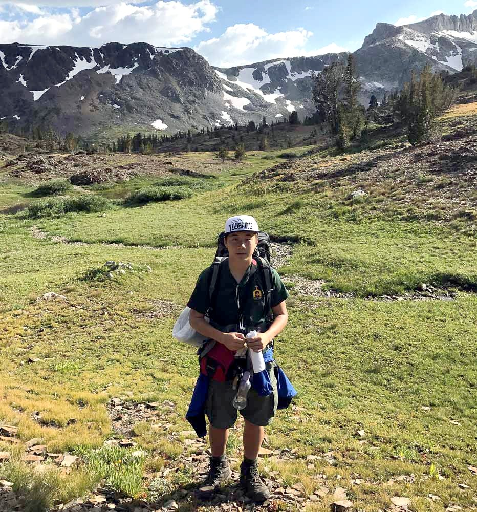
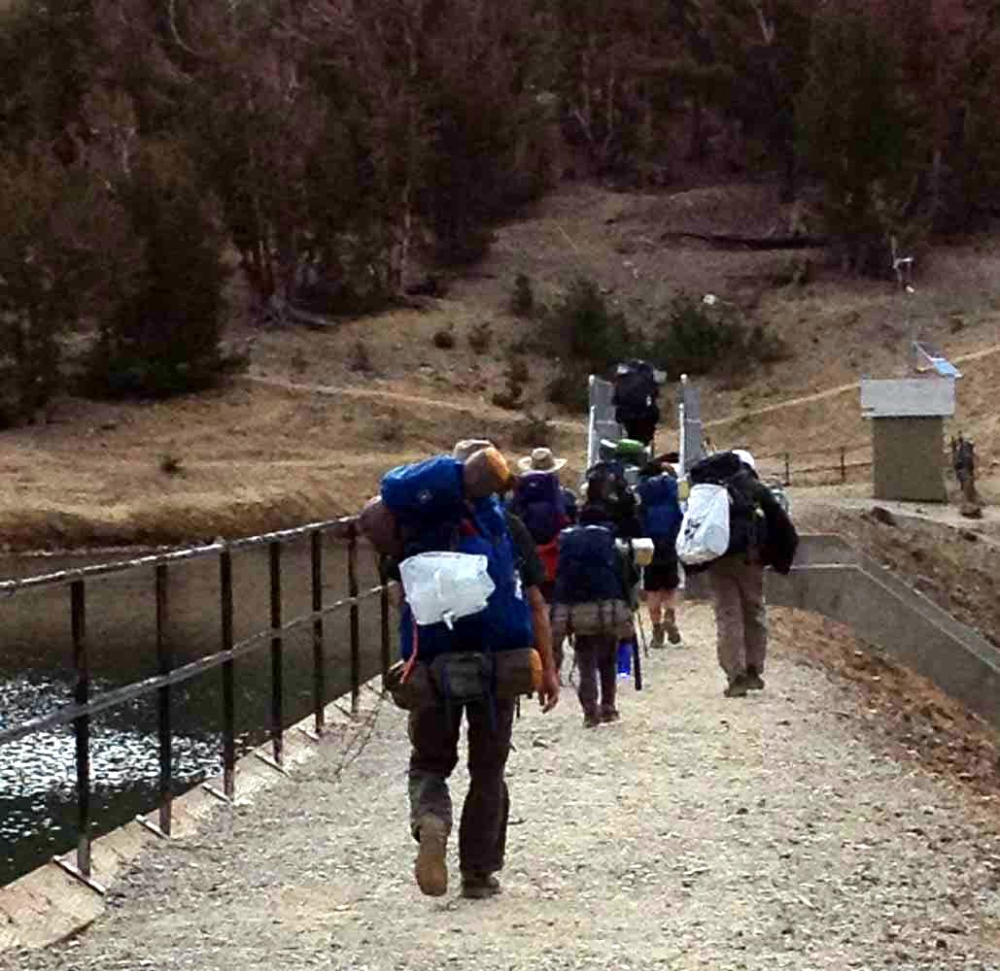

Twenty Lakes Basin - September 2017
The annual Labor Day trip, back in the twenty lakes basin for some reason... A very young group overall! It's an eight mile loop that begins at the Saddlebag Lake resort just east of Tioga pass.
{kind=link}
Group photo
The first day we walked a short distance from the trailhead, around Saddlebag Lake, and down to Lake Helen.
{kind=link}
Saddlebag Lake
{kind=link}
the guys took the altitude really hard, this was just 10 minutes in on flat terrain!
The guys were all feeling pretty bad from the long car ride and the altitude was kicking in for some. Nobody really in a great mood on the first day except Jeffery and I!{kind=link}
and thirty minutes in
{kind=link}
Micah really paid for running around like this at the altitude --- pretty sick that night
{kind=link}
Jeffery and I

{kind=link}
Mt. Conness

{kind=link}
Jeffery
{kind=link}
Steven and the lake just south of Helen
{kind=link}
We were surprised to see snow in September!
{kind=link}
In the cave
{kind=link}
North Peak at sunset
For some reason the weather was practically identical to the previous year's, sans big wind. We had a really nice sunset that evening. Lots of guys sick that night, lots of "room service" from me and Jeffery. (Honestly Jeffery wasn't feeling too well himself!) We got up late the next day since most of the guys probably didn't sleep so well.
{kind=link}
myself
{kind=link}
weird snow patch

North Peak
{kind=link}
Steven rocking those cool shades?!

Steelhead Lake -- the haze was really pretty
{kind=link}
There was some really slick granite, and we were all sliding around on it with only our socks on. Interestingly, our feet left behind these red streaks on the granite when we slid on it, and our socks turned very red as well. Cause? not too sure, I'm noticing a similarity with watermelon snow though...
{kind=link}
Our two brothers Thomas and Timothy!
{kind=link}
Our communal dinner
{kind=link}
Haha that's me in that green bag to the left of the tents...
The next day we were outta there pretty quickly (I did get the guys lost for the second year in a row, in the exact same place as well..) and we were on the dam before we knew it!

{kind=link}
Saddlebag Lake dam
{kind=link}
@ innout (tall asian male in the back is of no connection to our group fyi)
Probably one of the better trips I've been on!